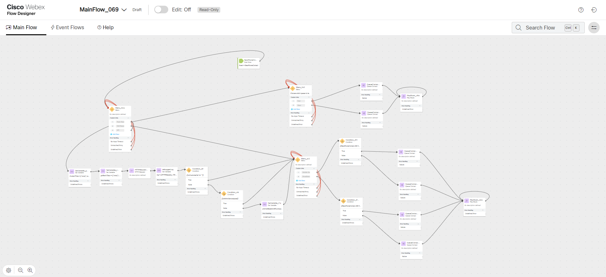

Lab 1 - Enhancing the caller experience
Please submit the form below with your Attendee or pod ID. All configuration entries in the lab guide will be renamed to include your pod ID.
Note
The input in the images that follow are only examples. They do not reflect the input you need to use in the lab exercises. In some cases, the input in the images may not follow the same attendee or pod ID from previous images. They are for representation only
Enhancing the caller experience: The foundation of call routing techniques
Imagine you are calling your telecom provider about a technical issue. You hope to get connected with the right agent quickly. But depending on the nature of your inquiry, the system can either route you directly to a specialized technical team or to an order status team if your issue is related to a product delivery.
Teams based routing / Longest available routing
In this setup, specific teams are aligned to handle certain types of calls – like a technical team for troubleshooting or an order status team for inquiries about shipments. Teams-Based Routing allows us to organize agents into these groups called Teams and ensure the caller receives the right expertise.
Multimedia profile
What is it?
A Multimedia Profile defines the various channels through which an agent can communicate with customers. Think of it as a toolbox filled with different tools (or channels) that agents can use to assist customers. Each tool is designed for specific tasks, making the agent more versatile and effective.
How does it work?
- Channel Assignment: Each agent can be assigned to specific channels based on their roles and preferences. For instance, one agent might handle phone calls and chats, while another might focus on emails and social media interactions.
- Team-Based Approach: Teams can have a collective Multimedia Profile, allowing for a broader range of customer interactions. For example, a technical support team might manage both chat and phone calls, ensuring coverage across all channels.
Configuration
Using the Admin profile of your Chrome browser, login into Control Hub https://admin.webex.com.
Your login will be the Admin Name in the email you received. It will be of the format wxcclabs+admin_ID
Remember to take up the offer from Chrome to save your password
This is the Administration interface for webex contact center and is also known as the Control Hub
{kind=link}
Look for the contact center option in the left pane under SERVICES – Contact Center and Click it
{kind=link}
Navigate to DESKTOP EXPERIENCE - Multimedia Profiles and click Create Multimedia Profile on the top right corner of the page
{kind=link}
Create a new MMP profile with a name MMP_
{kind=link}
Set the Blended in the More Details section and set the Voice to 1, Chat, Email and Social all to 3
Click Create
You have now configured a multimedia profile for the agent to handle 1 voice and 3 each of other digital channels simultaneously.
Site
What is it?
Consider a company operating in various regions, each with a unique geographical location where agents are based. These locations can range from bustling urban centers to quieter suburban areas, affecting how services are delivered and how agents interact with customers. The resources, technologies, and local knowledge available at each location play a crucial role in enhancing customer service.
Configuration
Under USER MANAGEMENT on the left pane navigate to Sites
Click Create Site on the top right corner to create a new site EastCoast_
Click Create
Tip
When there is a search window or drop down list in the Control Hub interface, start typing the string you want to search to find it quickly
{kind=link}
Repeat the above steps to create a WestCoast_
{kind=link}
Teams and agents
What is a team?
Agents who specialize in similar tasks are grouped together into Teams. For example, all the agents who handle technical issues form a Technical Team, and those who deal with order inquires make up the Order Status Team. This way, when a caller needs help, the system directs the call to the right team of experts.
By organizing agents into teams, we ensure that callers are handled efficiently by agents with the right knowledge. So, if you need help fixing your phone, you’ll be connected to a technical expert instead of someone who only knows about orders.
As part of this setup, when agents log in to the system, they choose the team to login which is assigned to the agent. For instance, if the agent is part of the East Technical Team, they login under that team’s profile. This way, the system knows which team they belong to and routes calls to them accordingly.
Configuration
Under USER MANAGEMENT in the left pane navigate to Teams and click Create Team.
Create the TechnicalSupport_
{kind=link}
On the next screen
{kind=link}
click Done. We will be using a slightly different order of configuration than what is suggested in that screen
Now create another TechnicalSupport_
{kind=link}
Setup Agents
Under USER MANAGEMENT in the left pane navigate to Contact Center Users. Search for attendeeID in the search box of the Contact Center Users page. attendeeID is your pod ID.
Click on the agent created for your pod and configure them for Contact Center.
Search for
Enable the Contact Center toggle to reveal more fields. We have now enabled this agent with a Contact center license. Fill out the rest of the fields based on what was configured for your attendee ID.
The first agent will be in the East coast site and team
{kind=link}
Now click Save
Configure the same for the second Agent in the West coast site and team
{kind=link}
Verify access to the agent desktop
Please use Google Chrome as the web browser when using webRTC as the voice endpoint
Note
Since we will be using the same Chrome browser for different roles we will use the Chrome Browser user profiles to allow multiple logins into the different components of the Webex contact center. For the control hub, use the Administrator profile created for you in the Chrome browser. Always offer Chrome to remember your credentials and password for this lab
Use the different Chrome browser profiles on your desktop for each agent.
The agent logins are in the email with the rest of the configurations. The password is also in the same email
{kind=link}
Navigate to https://desktop.wxcc-us1.cisco.com and login using the agent configured to the Technical_support team
Remember to login using the below configurations
{kind=link}
Accept the emergency calling notification. Allow access to the audio devices the first time you login.
Once logged in click on the Agent initials on the top right to verify your successful login
{kind=link}
Test the login for the other agent using their respective web browser profiles of Google Chrome.
You should now have logged in two agents
So far, you have accessed the Control Hub, configured agents needed for the rest of this lab exercise and logged them in with some help from the Chrome browser profiles.
Queues
A Queue is like a virtual ordered line that callers are placed in while waiting for an agent to become available. Think of it like standing in line to enter a movie hall. The system organizes all incoming calls into different queues based on the type of request. For example, callers from east coast requiring technical support go into the TechnicalSupport_East, while those from West Coast are placed in the TechnicalSupport_West Queue.
Once we’ve defined queues for different call types, we need to assign teams to handle those queues. This is done using Call Distribution Group (CDG). The Call Distribution Group allows us to assign one or more teams to a single queue. For example, both the technical teams could be associated to their respective queues.
Create Queues
Login into Control Hub https://admin.webex.com with your administrator credentials to begin our configuration. Navigate to Contact Center - CUSTOMER EXPERIENCE - Queues and click Create Queue.
{kind=link}
Create the
{kind=link}
Call_distribution
This is a collection of one or more groups that will each contain one or more teams of agents who will answer calls from this queue.
Since our queue is for TechnicalSupport_East, we would like our team from the East coast to answer the calls first.
Configure the Group like below
{kind=link}
{kind=link}
Note
It doesn't matter that West is shown above East when we expand the Call Distribution Group. They are both added to Group 1 and are both Priority 1
Under Advanced Settings, configure the parameters as below and click Create
{kind=link}
Repeat the same steps to configure the Technical Support Queue for the West Coast.
We now have two queues - TechSupport_East and TechSupport_West. Both have the east and west coast technical support teams configured under group 1
{kind=link}
We will now make sure the right agents are members of the required teams
Navigate to USER MANAGEMENT - Contact Center Users
Search for Agent

This shows the agents and the teams they belong in.
Verify that your agents are still logged in
Flow Designer
A "flow" defines the way the caller experiences the contact center before talking to an agent. The flow for voice calls is built in an interface called the Flow Designer. For this lab we have created a flow that you will all import and use for the rest of the lab.
 the flow and
{kind=link}
Download the flow to your computer and import the flow. Right click and Save link As MainFlow_
The name of the flow MainFlow_template is also embedded in the JSON file we just downloaded. If we were to import it as-is, the flow will get imported with the same name. We will need to edit the JSON file just downloaded to give it a name that is associated with your attendee ID. This is only necessary here since all lab participants are importing the same flow template and we don't want to save the same flow over others.
{kind=link}
- Open the downloaded file in nodepad++
{kind=link}
- Replace MainFlow_template with MainFlow_
attendeeID - Save and close the file
Now the file name of the flow also matches the internal identifier when it is imported into the system
In CUSTOMER EXPERIENCE - Flows ensure that there is no flow for your
Note
This lab uses only one flow and has multiple menu options to try the scenarios. There may be aspects of this flow that you don't yet understand. They will become clear as you go through the rest of this lab
From the CUSTOMER EXPERIENCE - Flows you will now be able to find the flow you just imported
Remember this Flow is only a template, you need to replace some aspects of the flow with the configuration objects you created. See the image below for what needs to be changed
Open the flow you just imported
{kind=link}
You will be editing this portion of the flow.
{kind=link}
Enable the Edit toggle on the top of the page. The toggle next to the search bar will open the parameters to edit for each node
{kind=link}
Note
Use the magnifying glass at the bottom left corner of the page to expand and shrink the flow designer canvas
Once the flow is updated, toggle the validation button on the bottom right of the flow canvas. If there are no errors, proceed to Publish Flow
{kind=link}
In order to invoke this flow one needs to assign this flow to an entry point. Navigate to CUSTOMER EXPERIENCE - Channels and click Create Channel
{kind=link}
Use the Flow you will be using in the Routing Flow field. Look up the Entry point Dial Number (EP DN) in the email you received (subject: WebexCC: Lab Access)
setup the EP DN as the Support Number
{kind=link}
Click Create
Time to make some phone calls
From any device at your disposal to make calls, call the EP DN to invoke the Flow. Choose the option 1 for Teams based routing.
Note
For the sake of simplicity the choice of the queue is left to you as an input. This is usually done by identifying the caller through an ANI check against a CRM or through other means.
Irrespective of which queue you are park the caller into the caller will be answered by an agent in the East or West team. You can test this by placing one of the agents into the "meeting" state from "available" and try calling.
Then try again by placing the other one in "meeting"
Prepare our reports to verify call routing
Before we finish this section let's take a detour to prepare our contact center reports. Review the instructions in the Reporting section.
Summary
Both teams are made available for the callers simultaneously. We did not prioritize one team over the other. For that let's try the Call Distribution Group